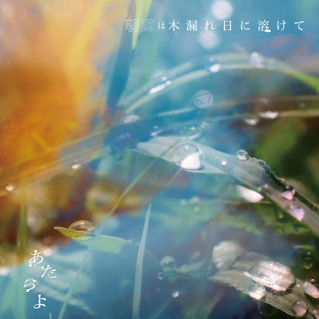

ATARAYO - リフレイン
리후레인
(리프레인)

3rd - 朝露は木漏れ日に溶けて
아사츠유와 코모레비니 토케테
(아침 이슬은 나뭇잎 사이로 비치는 햇살에 녹아들고)
落ちゆく枯葉を追いかけて
오치유쿠 카레하오 오이카케테
(떨어지는 낙엽을 뒤쫓아)
手の中に閉じ込めた
테노 나카니 토지코메타
(손 안에 가두었어)
まるで桜の花びらを
마루데 사쿠라노 하나비라오
(마치 벚꽃잎을)
握りしめるように
니기리시메루 요-니
(움켜쥐듯이)
粉々に砕けたそれは
코나고나니 쿠다케타 소레와
(산산조각 난 그것은)
もう元には戻らないみたい
모- 모토니와 모도라나이 미타이
(이젠 원래대로 돌아가지 않을 것 같아)
まるで僕らみたいだと
마루데 보쿠라 미타이다토
(마치 우리들 같다고)
笑って見せた 見せた
와랏테 미세타 미세타
(웃어 보였어, 보였어)
口にすればこの想いも
쿠치니 스레바 코노 오모이모
(입 밖에 내면 이 마음도)
僕だけのものじゃなくなってしまいそうで
보쿠 다케노 모노쟈 나쿠낫테 시마이소-데
(나만의 것이 아니게 되어 버릴 것 같아서)
目を閉じて心の中に
메오 토지테 코코로노 나카니
(눈을 감고 마음속에)
君を必死に描いた
키미오 힛시니 에가이타
(너를 필사적으로 그렸어)
枯葉さえ舞いゆく季節に
카레하사에 마이유쿠 키세츠니
(낙엽마저 흩날리는 계절에)
僕は何を残せるだろうか
보쿠와 나니오 노코세루 다로-카
(나는 무엇을 남길 수 있을까)
薄れゆく記憶の中
우스레유쿠 키오쿠노 나카
(희미해져 가는 기억 속에서)
君が消えてしまわないように
키미가 키에테 시마와나이 요-니
(네가 사라져 버리지 않도록)
何度も何度も思い出すんだ
난도모 난도모 오모이다슨다
(몇 번이고 몇 번이고 떠올려)
吐き出した言葉は白く
하키다시타 코토바와 시로쿠
(내뱉은 말은 하얗게)
息と混ざり風に乗って
이키토 마자리 카제니 놋테
(숨결과 섞여 바람을 타고)
君のもとへ届きはしないかと
키미노 모토에 토도키와 시나이카토
(너에게 닿지는 않을까 하고)
そう願うばかりで
소- 네가우 바카리데
(그저 바랄 뿐이고)
あまりにも無力なそれは
아마리니모 무료쿠나 소레와
(너무나도 무력한 그것은)
目の前で消えていくばかり
메노 마에데 키에테 이쿠 바카리
(눈앞에서 사라져갈 뿐)
せめてこの想いだけでも
세메테 코노 오모이 다케데모
(적어도 이 마음만이라도)
風がさらってくれたら
카제가 사랏테 쿠레타라
(바람이 휩쓸어 가 준다면)
僕が抱えられる記憶は
보쿠가 카카에라레루 키오쿠와
(내가 간직할 수 있는 기억은)
あまりにも限りがあって
아마리니모 카기리가 앗테
(너무나도 한계가 있어서)
手の中をすり抜けて
테노 나카오 스리누케테
(손 안을 빠져나가)
落ちてしまうんだよ
오치테 시마운다요
(떨어져 버린단 말이야)
どれほど忘れたくなくとも
도레호도 와스레타쿠 나쿠토모
(아무리 잊고 싶지 않아도)
僕らは忘れる生き物だ
보쿠라와 와스레루 이키모노다
(우리들은 잊는 존재야)
忘れたことさえ忘れてしまうような
와스레타 코토사에 와스레테 시마우 요-나
(잊었다는 것조차 잊어버릴 것 같은)
日が来ても
히가 키테모
(날이 와도)
君を覚えていたいんだ
키미오 오보에테 이타인다
(너를 기억하고 싶어)
言葉さえ舞いゆく季節に
코토바사에 마이유쿠 키세츠니
(말조차 흩날리는 계절에)
僕は何を伝えるだろうか
보쿠와 나니오 츠타에루 다로-카
(나는 무엇을 전할까)
心さえ舞いゆく季節に (貴方を)
코코로사에 마이유쿠 키세츠니 (아나타오)
(마음마저 흩날리는 계절에 (당신을))
君は何を思うのだろうか (想っている)
키미와 나니오 오모우노 다로-카 (오못테 이루)
(너는 무엇을 생각할까 (생각하고 있어))
移りゆく季節の中 (ずっと)
우츠리유쿠 키세츠노 나카 (즛토)
(변해가는 계절 속에서 (계속))
君が消えてしまわないように (貴方が消えてしまわないように)
키미가 키에테 시마와나이 요-니 (아나타가 키에테 시마와나이 요-니)
(네가 사라져 버리지 않도록 (당신이 사라져 버리지 않도록))
何度も何度も思い出すんだ (何度も 貴方を)
난도모 난도모 오모이다슨다 (난도모 아나타오)
(몇 번이고 몇 번이고 떠올려 (몇 번이고 당신을))